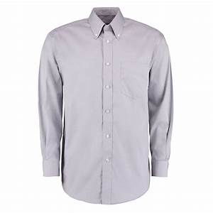
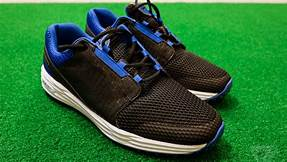

Mobilenet VS Google Lens


Google Lens: kk105 silver grey
Mobilenet: suit, suit of clothes
Result: Mobilenet is more accurate

Google Lens: these smart shoes fixed my awful golf swing in two minutes
Mobilenet: running shoe
Result: Mobilenet is more accurate
Google Lens: BeamNG drive skateboard
Mobilenet: sunglass
Result: Google Lens is more accurate